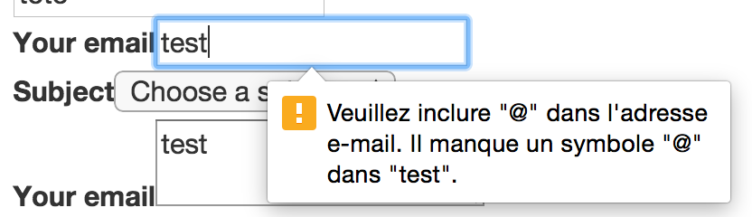
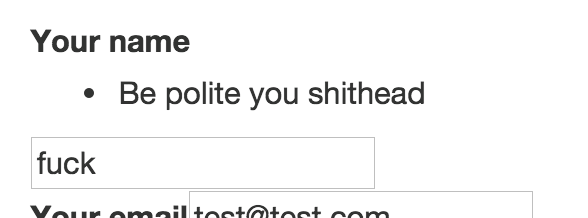

H2 - P2020
Développement web
Cours 36 - 2017-05-11
- github : https://github.com/brunosimon/hetic-p2020
- site : http://bruno-simon.com/hetic/p2020/
- contact : bruno.simon@hetic.net
Silex
Formulaires
- Silex fourni un service pour gérer les formulaires "facilement"
- Il s'agit de FormServiceProvider
- Il existe de nombreuses façons de l'utiliser selon le contexte
- La documentation Silex est incomplète, il vaut mieux utiliser la documentation Symfony
Nous allons créer un formulaire de contact dans la page About
1 - Rajouter le service
- Comme pour Twig ou UrlGenerator, il faut rajouter le service à Silex
- FormServiceProvider nécessite deux autres services, TranslationServiceProvider et ValidatorServiceProvider, nécessaires pour l'affichage et la gestion des erreurs
Dans index.php
$app->register(new Silex\Provider\FormServiceProvider());
$app->register(new Silex\Provider\TranslationServiceProvider());
$app->register(new Silex\Provider\ValidatorServiceProvider());
2 - Créer le formulaire
- La création d'un formulaire passe par la création d'un builder
- Ce builder va permettre de paramétrer le formulaire et ses différents champs
- Nous allons faire un simple champ de texte pour commencer
Dans la route /about
// Create builder
$form_builder = $app['form.factory']->createBuilder();
// Set method and action
$form_builder->setMethod('post');
$form_builder->setAction($app['url_generator']->generate('about'));
// Add input
$form_builder->add('name', 'text');
$form_builder->add('submit', 'submit');
// Create form
$form = $form_builder->getForm();
3 - Afficher dans twig
Nous devons envoyer le formulaire à Twig
Dans la route /about, avant le return
// Send the form to the view
$data = array(
'contact_form' => $contact_form->createView()
);
- Lorsque nous avons ajouté le service FormServiceProvider, plusieurs fonctions permettant de gérer le formulaire ont été ajoutées à twig
- L'une de ces méthodes est form() et permet de créer le formulaire entier
- Nous verrons les autres méthodes plus tard
Dans la vue /view/about.twig
{{ form(contact_form) }}
4 - Gérer les données envoyées
- Le formulaire s'affiche bien
- Mais si on clique sur submit, Silex indique que la route n'existe pas
- Les routes ont été créé avec la method get() ne supportant que des requêtes en GET
- Il suffit de remplacer get() par match()
$app->match('/about', function() use ($app) {
/* ... */
})
->bind('about');
- Maintenant que la requête fonctionne, nous avons besoin de récupérer les données envoyées
- Pour cela, il faut rajouter un paramètre dans la fonction de la route
- Il n'est pas nécessaire de savoir ce qui se trouve dans $request
$app->match('/about', function(Symfony\Component\HttpFoundation\Request $request) use ($app)
{
/* ... */
})
->bind('about');
- Le namespace est long à écrire
- Une astuce consiste à écrire le chemin du namespace au début du script php précédé par use
use Symfony\Component\HttpFoundation\Request;
/* ... */
$app->match('/about', function(Request $request) use ($app)
{
/* ... */
})
->bind('about');
La variable $form possède plusieurs méthodes qui vont permettre de tester/gérer les données envoyées
- handleRequest($request) lui indique de gérer les données envoyées
- isSubmitted() indique si le formulaire à été envoyé
- isValid() indique si les données envoyées sont valide
- getData() permet de récupérer les valeurs
- setData($data) permet de mettre les valeurs
Dans la route /about après $contact_form = $form_builder->getForm();
// Handle request
$contact_form->handleRequest($request);
// Is submited
if($contact_form->isSubmitted())
{
// Get form data
$form_data = $contact_form->getData();
// Is valid
if($contact_form->isValid())
{
// Send email here
// Redirect to success page
echo '';
print_r($form_data);
echo '';
exit;
}
}
5 - Rajouter des champs
- Les champs se rajoutent directement sur le builder avec la méthode add()
- Nous avons vu les champs text et submit
- Il en existe bien d'autres (liste complète)
- Nous allons tester les champs text, textarea, email, choice et submit
Add()
- Le premier paramètre correspond au nom de l'input
- Le deuxième paramètre correspond au type
-
Le troisième paramètre (optionnel) correspond aux options
- Les différentes options sont listées dans la documentation de chaque type de champ
- Elles permettent par exemple de limiter la longueur, de trimer, de changer le label, etc.
Name (text)
$form_builder->add(
'name',
'text',
array(
'label' => 'Your name',
'trim' => true,
'max_length' => 50,
'required' => true,
)
);
Email (email)
$form_builder->add(
'email',
'email',
array(
'label' => 'Your email',
'trim' => true,
'max_length' => 50,
'required' => true,
)
);
Subject (choice)
$form_builder->add(
'subject',
'choice',
array(
'label' => 'Subject',
'required' => true,
'empty_value' => 'Choose a subject',
// 'multiple' => true,
// 'expanded' => true,
'choices' => array(
'Informations' => 'Informations',
'Proposition' => 'Proposition',
'Other' => 'Other',
)
)
);
Message (textarea)
$form_builder->add(
'message',
'textarea',
array(
'label' => 'Message',
'trim' => true,
'max_length' => 50,
'required' => true,
)
);
6 - Gestion des erreurs
- Plusieurs types d'erreurs sont gérés de base (max_length, email, url, ...)
- Une grande partie des erreurs sont gérées directement en HTML
 - Il est possible de rajouter d'autres contraintes comme "égal à", "différent de", "parmi", "regex", etc. (Liste complète)
- Il suffit de rajouter constraints dans le tableau d'options du champ
Une contrainte se créée de la manière suivante
new Symfony\Component\Validator\Constraints\NotEqualTo(
array(
'value' => 'fuck',
'message' => 'Be polite you shithead'
)
)
La syntaxe est lourd et longue, mais il existe une astuce
Il suffit de rajouter la ligne suivante au début du script php
use Symfony\Component\Validator\Constraints;
et de créer la contrainte ainsi
new Constraints\NotEqualTo(
array(
'value' => 'fuck',
'message' => 'Be polite you shithead'
)
)
Exemple complet avec le champ Name
$form_builder->add(
'name',
'text',
array(
'label' => 'Your name',
'trim' => true,
'max_length' => 50,
'required' => true,
'constraints' => array(
new Constraints\NotEqualTo(
array(
'value' => 'fuck',
'message' => 'Be polite you shithead'
)
)
),
)
);
Résultat

7 - Personnaliser le front
-
Actuellement le code front ressemble à ça
{{ form(contact_form) }} - Cela devient problématique si on souhaite personnaliser le formulaire, notamment lorsqu'on utilise un framework front
- Il existe des fonctions permettant de n'afficher que des morceaux du formulaire
- Liste complète
- form_start() : Ajoute la balise ouvrante
- form_end() : Ajoute la balise fermante
- form_row() : Ajoute le champ complet (label + input)
- form_label() : Ajoute le label du champ
- form_widget() : Ajoute l'input du champ
- form_errors() : Ajoute les erreurs
-
Certaines de ces fonctions attendent le formulaire complet en paramètre
{{ form_start(contact_form) }} -
D'autres attendent un champ particulier du formulaire
{{ form_widget(contact_form.name) }}
- Le deuxième paramètre de ces fonctions permettent de spécifier des options
- Les options dépendent de chaque fonction
(Cf. documentation) -
Exemple :
{{ form_widget( contact_form.name, { attr : { placeholder : 'John' } } ) }}
Exemple complet dans contact.twig
{{ form_start(contact_form) }}
{{ form_label(contact_form.name) }}
{{ form_widget(contact_form.name, {attr:{placeholder:'John'}}) }}
{{ form_errors(contact_form.name) }}
{{ form_label(contact_form.email) }}
{{ form_widget(contact_form.email, {attr:{placeholder:'john.snow@gmail.com'}}) }}
{{ form_errors(contact_form.email) }}
{{ form_widget(contact_form.subject, {attr:{class:'browser-default'}}) }}
{{ form_errors(contact_form.subject) }}
{{ form_label(contact_form.message) }}
{{ form_widget(contact_form.message, {attr:{placeholder:'u know nothing',class:'materialize-textarea'}}) }}
{{ form_errors(contact_form.message) }}
{{ form_widget(contact_form.submit, {attr:{class:'btn'}}) }}
{{ form_end(contact_form) }}
8 - Envoyer le mail
- Silex fourni un service pour gérer l'envoi de mails
- Il s'agit de SwiftmailerServiceProvider
Rajouter le service
$app->register(new Silex\Provider\SwiftmailerServiceProvider(), array(
'swiftmailer.options' => array(
'host' => 'smtp.gmail.com',
'port' => 465,
'username' => 'hetic.p2018.smtp@gmail.com',
'password' => 'heticp2018smtp',
'encryption' => 'ssl',
'auth_mode' => 'login'
)
));
Le service est configuré pour envoyer des mails à partir du serveur SMTP de google avec un compte perso
Envoyer le mail
Dans la route /about lorsque le formulaire est validé
$message = \Swift_Message::newInstance();
$message->setSubject($form_data['subject'].' ('.$form_data['email'].')');
$message->setFrom(array($form_data['email']));
$message->setTo(array('bruno.simon@hetic.net'));
$message->setBody($form_data['message']);
$app['mailer']->send($message);
return $app->redirect($app['url_generator']->generate('about'));
Vous connaissez les formulaire Silex/Symfony